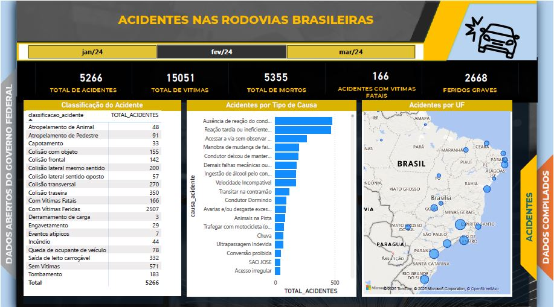
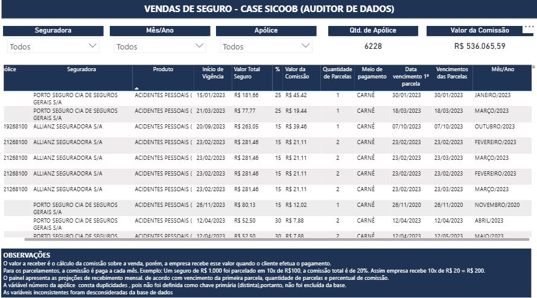

Resumo Profissional
Profissional de TI com mais de 15 anos de experiência, apaixonado por transformar dados em conhecimento para impulsionar o crescimento de negócios. Possuo sólida experiência em bancos de dados, ciência de dados, análise de dados, segurança de dados e segurança da informação, além de ser especialista em governança de dados e inteligência artificial, com foco em LGPD e GDPR. Atuei em diversos projetos estratégicos, liderando equipes, gerenciando projetos e entregando soluções inovadoras. Sou especialista em metodologias ágeis e possuo certificações em diversas áreas, como Scrum, Kanban e ISO/IEC 27001. Busco novos desafios para aplicar meus conhecimentos e contribuir para o sucesso de empresas inovadoras.
Formação Acadêmica
- Pós-Graduação em Computação em Nuvem (Cloud Computing) - Faculdade Serra Geral (cursando)
- Pós-Graduação em Engenharia de Dados - Faculdade Focus (agosto/2025)
- Pós-Graduação em Inteligência Artificial (IA) - Faculdade Serra Geral (janeiro/2024)
- Pós-Graduação em Perícia Cibernética - Faculdade Serra Geral (outubro/2023)
- Pós-Graduação em Governança em TI - Faculdade Serra Geral (junho/2023)
- Pós-Graduação em Big Data (ciência de dados) - Faculdade Serra Geral (fevereiro/2023)
- Pós-Graduação em Data Warehouse e Business Intelligence - Faculdade Serra Geral (setembro/2022)
- MBA Gerenciamento de Projetos de TI - Faculdade Dominius (fevereiro/2022)
- Pós-Graduação em Data Protection Officer (DPO) - Faculdade Unyleya (fevereiro/2022)
- Pós-Graduação em Segurança da Informação - Faculdade Focus (outubro/2021)
- Pós-Graduação em Desenvolvimento de Soluções Baseadas em Software Livre - UNICEPLAC (março/2006)
- Graduação em Tecnologia em Segurança da Informação - Faculdades Integradas UNICESP (dezembro/2004)
Certificações
Destaques:
- Project Management Advanced (Study Section - 2023)
- Segurança na Nuvem (Cloud Security) Profissional (IBSEC - 2023)
- AI Prompt Essentials (Management Strategy Institute - 2023)
- SCRUM Fundamentals Certified (SCRUMSTUDY - 2022)
- ISO/IEC 27001 INFORMATION SECURITY ASSOCIATE (SKILLFRONT - 2022)
- Analista em Cibersegurança (governança) (IBSEC - 2022)
- Data Fundamentals (IBM - 2025)
- Google Analytics Certification (Google - 2024)
Link Para os Certificados
Para ver a autenticidade e o certificado completo dos meus cursos e certificações, clique nos links abaixo:
- CERTIFICAÇÕES - CREDLY
- Curso Engenharia de Dados - Data Science Academy
- Curso Data Science - CISCO Academy
- Curso Gestão de Projeto de Software - PMBOOK - Instituto Federal do Rio Grande do Sul - IFRS
- Curso Ágil no Contexto do Serviço Público - Escola Nacional de Administração Pública - ENAP
- Curso Análise de Dados Como Suporte a Tomada de Decisao - Escola Nacional de Administração Pública - ENAP
- Curso Análise de Dados em Linguagem R - Escola Nacional de Administração Pública - ENAP
- Curso Big Data em Apoio a Tomada de Decisao - Escola Nacional de Administração Pública - ENAP
- Curso Fundamentos da Lei Geral de Protecao de Dados - Escola Nacional de Administração Pública - ENAP
- Curso Gerenciar Dados com o Microsoft 365 - Escola Nacional de Administração Pública - ENAP
- Curso Gestao de Projetos - Escola Nacional de Administração Pública - ENAP
- Curso Governanca de Dados na Transformacao Digital - Escola Nacional de Administração Pública - ENAP
- Curso Governanca de Dados - Escola Nacional de Administração Pública - ENAP
- Curso Governo Data Driven, Transformacao Orientada por Dados - Escola Nacional de Administração Pública - ENAP
- Curso Inteligência Artificial Generativa - Escola Nacional de Administração Pública - ENAP
- Curso Inteligência Artificial Para Simplificar o dia a dia - Escola Nacional de Administração Pública - ENAP
- Curso Ciência de Dados/Estatística Eseencial - Escola Nacional de Administração Pública - ENAP
- Curso Ciência de Dados/Tratamento de Dados - Escola Nacional de Administração Pública - ENAP
- Curso Introdução a LGPD - Escola Nacional de Administração Pública - ENAP
- Curso Uso de Linguagem Simples - Escola Nacional de Administração Pública - ENAP
- Curso Proteção de Dados Pessoais no Setor Público - Escola Nacional de Administração Pública - ENAP
- Curso SCRUM no Contexto do Serviço Público - Escola Nacional de Administração Pública - ENAP
- Curso Visualização de Dados Aplicada à Transfornação Digital - Escola Nacional de Administração Pública - ENAP
- Curso Data Science - Alura
- Curso Mapeamento de Processos com BPMM (BIZAGI) - Alura
- Curso ETL com Pentaho Data Integration (PDI) - Alura
- Curso Dashboard com Microsoft Power BI - Visualização de Dados - Alura
- Curso Google Data Studio - Alura
- Curso DAX e ETL com Microsfot Power BI - Alura
- Curso ORACLE PL/SQL - Procedures e Funções - Alura
- Curso Estrutura do Scrum - Alura
- Curso Business Intelligence - Fundação Getúlio Vargas (FGV)
- Curso CISCO IT ESSENTIALS - Escola de Comunicação do Exército (ESCOM)
- Curso ITSM com GLPI - ANETI
- Curso Inteligência Artificial - Carreira do Futuro - Exame S/A
- Curso Microsoft Azure Fundamentals (AZ-900)- KA SOLUTIONS
- Curso MICROSOFT AZURE BÁSICO - RMoreira Dados e Inteligência Artificial
- Curso Cibersegurança no Teletrabalho - SONDA TECNOLOGIA
- Curso BUS611: Data Management - Saylor Academy
- Curso INTRODUÇÃO A DATABRICKS - RMoreira Dados e Inteligência Artificial
- Curso LGPD - Política de Privacidade de Dados - UDEMY
- Curso DPO & LGPD na Prática - KA SOLUTION
- Curso DPO Start - TI Exames
- Curso Masterclass de Espionagem Cibernética - Dr. Davis Alves
- Curso Artificial Intelligence Act e relação com a norma ISO/IEC 42001:2023 - TI Exames
- Curso Gerencialmento Ágil de Projetos - SENAC
- Curso Gestor de Privacidade de Dados - TI Exames e Data UX
- Curso Lei Geral de Proteção de Dados Pessoais - OAB SP
- Curso Linux Avançado - Exército Brasileiro
- Curso Microsoft Azure Data Fundamentals (DP-900) - KA SOLUTION
- Curso Microsoft Security, Compliance and Identity Fundamentals (SC-900) - KA SOLUTION
- Curso MicroStrategy Data Visualization - Inteligência de DAdos - UDEMY
- Curso de SAP: SAPFUN, Basis, FI, CO e PM - KA SOLUTION
- Curso Elaborando um Plano de Ação de Segurança da Informação (SI) alinhado com a LGPD - TI Exames
- Curso Project Management - Orford Home Study
- Curso Python - Santander Open Academy
- Curso de SAP: ABAP, HR/HCM, PP, SD e MM - KA SOLUTION
- Curso de Formação Completa em Scrum - Planejamento e Gestão Ágil de Projetos - Faculdade UNIEDUCAR
- Curso Segurança de Dados - ACADI TI
- Curso Segurança Cibernética: Guias NIST para Infraestrutura Crítica e Inteligência Artificial - TI Exames
- Curso Conduzindo um Projeto de Consultoria LGPD com apoiodo SGPD (Sistema de Gestão de Proteção de Dados) - TI Exames
- Curso Veracodi - Instituto de Defesa Cibernética
- Curso de Fundamentos da Governança de Dados e DAMA-DMBOK - TI Exames
- Simpósio de Ciência de Dados, Engenharia de Dados e Data Analytics - Data Universe
- Curso IMERSÃO PROFISSIONAL DE PRIVACIDADE - TI Exames
- Curso Linux Básico em modo Shell - Exército Brasileiro
- Curso LGPD - Ferramentas para Adequação - SOMAXI T
- Curso Vazamento de Dados: O que Vem Acontecendo no Brasil e no Mundo - ANACO
- Sétima Edição do Congresso de Tecnolgia da Informação
- Curso de ETL no Microsoft Power BI - Planilheiros
- Curso Power BI - Semana do Power BI - DATAB
- Curso Desenvolvimento ETL - DataStage na Prática - UDEMY
- Curso Intensivo MultiCloud DevOps e IA
- Curso Fundamentos da Gestão de Projetos - FM2S Educação
- Curso Gestão de Projetos no Setor Público - Faculdade UNYLEYA
- Curso Governança com Estatais e LGPD - Rede Governança Brasil
- Workshop de Implementação da LGPD - Comunidade Internacional de Estudos em Direito Digital
- Curso de Banco de Dados e Linguagem SQL - Escola de Inteligência Artificial
- Curso Engenharia de Dados - Escola de Inteligência Artificial
- Curso ISO 27.001 EXIN ISFS - UDEMY
- Jornada de Engenharia de Dados - BIX Tecnologia
- LGPD e Sistemas de Cãmeras - TI Exames
- LGPD e Inteligência Artificial para Líderres e Gestores - TI Exames
- Curso de SCRUM - KA SOLUTION
- Curso People Analytics - Sólides Tecnologia S/A
- Curso de Formação em Privacidade e LGPD, Preparação para EXIM PDPE - TI Exames
- Curso LGPD – Lei Geral de Proteção de Dados – Aplicações e Boas Práticas - Faculdade UNIEDUCAR
- Certificação em AI Prompt Essentials - Management Strategy Institute
- Certificação em Analista de Cibersegurança (governança) Associado - IBSEC
- Certificação Business Intelligence Foundation BIFPC - CERTIPROF
- Certificação em Fundamentos em Cibersegurança - IBSEC
- Certificação em Project Management (Advanced)- Study Section
- Certificação em Human Resource Management (HRM) - Study Section
- Certificação do Google Analytics - Google
- Certificação Hacker Etico - IBSEC
- Certificação ISO/IEC 27001 Information Security Associate - SKILLFRONT
- Certificação Kanban Essentials Professional Certificate (KEPC)- CERTIPROF
- Certificação Lean Seis Sigma Yellow Belt - FM2S
- Certificação Fundamentos Na Lei Geral De Proteção De Dados LGPDF - CERTIPROF
- Certificação Agile Methodology(Foundation) - Study Section
- Certificação em Project Management Essentials Certified - Management Strategy Institute
- Certificação Remote Work Virtual Collaboration RWVCPC - CERTIPROF
- Certificação Associate in Scrum fundamentals (CASF) - SKILLFRONT
- Certificação Scrum Foundation Professional Certificate SFPC - CERTIPROF
- Certificação Scrum Fundamentals Certified SFC - SCRUMstudy
- Certificação em Cybersecurity Awareness Professional CAPCTM - CERTIPROF
- Certificação Scrum Master (Advanced) - Study Section
- Ambiente de Desenvolvimento e Primeiros Passos com Python - Digital Innovation One (DIO)
- Curso Benefícios da Computação em Nuvem - Digital Innovation One (DIO)
- Curso Armazenando dados na Cloud - Digital Innovation One (DIO)
- Curso para Exame PSM I - Digital Innovation One (DIO)
- Curso Fundamentos da Plataforma de Aplicações no Azure - Digital Innovation One (DIO)
- Curso Introdução a Computação em Nuvem - Digital Innovation One (DIO)
- Curso Introdução a Experiência Microsoft Azure Cloud Native - Digital Innovation One (DIO)
- Curso Introdução ao Ambiente Cloud - Digital Innovation One (DIO)
- Curso Introdução ao AZ-900 com a Microsoft - Digital Innovation One (DIO)
- Curso Introdução ao Scrum - Digital Innovation One (DIO)
- Curso Introdução Prática ao Azure Al e Azure OpenAI Models - Digital Innovation One (DIO)
- Curso Microsoft Azure - Localizando Serviços por Categoria - Digital Innovation One (DIO)
- Curso Princípios do Git e Github - Digital Innovation One (DIO)
- Curso Sobre o Framework Scrum - Digital Innovation One (DIO)
- Curso Páginas Web com HTML - Digital Innovation One (DIO)
Histórico Profissional
-
Analista de Dados Sr. - Hitss do Brasil Serviços Tecnológicos (GLOBAL HITSS)
Janeiro/2023 - Atual
Atualmente, atuo como Analista de Dados Sênior na sede da ANVISA — uma das agências reguladoras mais relevantes do Brasil, onde tenho a oportunidade de transformar dados em insights estratégicos que apoiam decisões de alto impacto para a saúde pública e o desenvolvimento do país. Inserido em uma cultura fortemente data driven, colaboro diretamente com times multidisciplinares no desenvolvimento de dashboards e painéis interativos que facilitam a identificação de padrões e tendências em grandes volumes de dados complexos. Utilizo metodologias ágeis (SCRUM) para garantir entregas contínuas, eficientes e alinhadas com os objetivos estratégicos da organização. Com essa trajetória consolidada n área de dadops, inteligência de negócios e gestão de times ágeis, desenvolvi diversas habilidades técnicas e gerenciais, me permitindo participar e liderar projetos complexos, transformando dados em insights estratégico para órgãos públicos e empreas privadas.
-
Analista de Dados Sr. - Logiks Consultoria e Serviços em Tecnologia da Informação
Março/2022 - Dezembro/2023
Continuidade do Contrato Anterior, devido a Sonda Tecnologia ter perdido o processo licitatório de prestação de serviço de Ciências de Dados na Polícia Rodoviária Federal. Onde houve continuidade do trabalho na empresa vencedora (Logiks ). A atuação no contrato na Polícia Rodoviária Federal - PRF como analista de dados OLAP, com desenvolvimento de dashboards/relatórios no Microsoft Power BI. Atuando com diversas bases de dados (SQL do Azure, Teradata, SQL Server, PostgreSQL, IBM Informix, etc.), com metodologia ágil, DevOps.
-
Administrador e Analista de Dados - SONDA Tecnologia
Setembro/2021 - Março/2022
Analista de Dados com experiência em ambientes de alta demanda, atuando como terceirizado na Polícia Rodoviária Federal (PRF). Especialista em análise OLAP e desenvolvimento de dashboards no Microsoft Power BI, com domínio na manipulação de dados de múltiplas plataformas como SQL do Azure, Teradata, SQL Server, PostgreSQL e IBM Informix. Possuo experiência em metodologias ágeis e DevOps, com foco na entrega de soluções eficientes e de alto impacto.
-
Analista de Dados - Siqueira Campos Importadora
Maio/2021 - Agosto/2021
Profissional com experiência em Business Intelligence, focado na mineração e tratamento de dados para a geração de insights estratégicos. Especialista no desenvolvimento de dashboards e relatórios dinâmicos no Microsoft Power BI, com habilidade comprovada na extração e análise de informações de sistemas ERP e do SISCOMEX.
-
Analista de Tecnologia / Governança de Dados (PJ) - Group Medmais
Outubro/2020 - Abril/2021
Participou do Comitê Gestor de Proteção de Dados Pessoais e atuou na adequação à LGPD. Realizou governança e segurança de dados, monitorando o cumprimento regulatório (LGPD, ISO 27001).
-
Oficial de Informática (OTT) - 1° Tenente - Exército Brasileiro
Setembro/2011 - Setembro/2019
Analista de dados (Oficial de Tecnologia) responsável pela administração, planejamento e gestão de processos técnicos do sistema corporativo SERMILMOB - Sistema Eletrônico de Recrutamento Militar e Mobilização (Marinha do Brasil, Exército Brasileiro e Força Aérea Brasileira); - Governança de Dados (DAMA DMBOK): - Realizar o acompanhamento da carteira de projetos de TI, monitorando prazos e escopo; - Realizar ações de melhorias nos processos do ciclo de aprovação e priorização de demandas; - Implantação de melhoria nos processos com base nas boas práticas de ITIL e COBIT
Portfólio de Projetos
Confira alguns dos painéis e projetos que desenvolvi, mostrando a aplicação prática de minhas habilidades em Business Intelligence e Análise de Dados.
Indicadores Estratégicos

Projeto de Business Intelligence (BI) focado no desenvolvimento de painéis executivos para a Polícia Rodoviária Federal (PRF). Atuei na extração, tratamento e modelagem de dados provenientes do banco de dados Teradata, criando uma base sólida para análise. Utilizando a ferramenta Microsoft Power BI, concebi e implementei uma série de dashboards interativos com os principais indicadores estratégicos (KPIs), fornecendo à alta cúpula da instituição uma plataforma visual e acessível para monitorar o desempenho, identificar gargalos e subsidiar o planejamento e as decisões estratégicas.
Acidentes de Trânsito
Este painel desenvolvido no Microsfot Power BI, baseado em informações do Governo Federal (dados abertosa), apresenta uma análise dos acidentes ocorridos nas rodovias brasileiras nos meses de janeiro, fevereiro e março de 2024. O objetivo é fornecer uma visão rápida e clara das principais métricas (KPIs,) relacionadas a acidentes de trânsito nas rodovias brasileiras. O mapa geográfico, um recurso visual poderoso, mostra a distribuição dos acidentes por estado. A concentração dos pontos sugere que os estados com maior volume de tráfego e malha rodoviária (como Minas Gerais, São Paulo, Paraná e Rio de Janeiro) registram o maior número de ocorrências, o que é esperado. Esse visual ajuda a identificar as regiões que precisam de mais atenção em termos de políticas de segurança..
Vendas de Seguro
Projeto de Business Intelligence, para desenvolvimento de Painéis, constando as vendas de Seguros nas cooperativas do Sicoob Este projeto consiste no desenvolvimento de painéis de visualização de dados sobre vendas de seguros para o Sicoob. O objetivo principal foi fornecer uma ferramenta estratégica para a diretoria, permitindo uma análise aprofundada e uma tomada de decisões assertivas. Utilizando o Microsoft Power BI , foram integrados painéis interativos que transformam dados complexos em informações claras e acessíveis. A visualização de dados permite identificar de forma rápida e intuitiva os principais outliers e tendências de desempenho nas cooperativas do Sicoob. O projeto é uma peça-chave para a alta administração, pois oferece a capacidade de monitorar o desempenho das vendas de seguros em tempo real. Isso possibilita a detecção de oportunidades de melhoria e a implementação de estratégias mais eficazes para o crescimento e a melhoria dos resultados. Os dados apresentados são fictícios , garantindo a segurança e confidencialidade das informações internas da empresa.